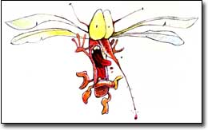
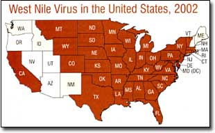
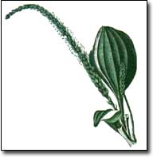

Humans have been taking aim at mosquitoes since 1897, when Sir Ronald Ross identified a tropical species as the vector for deadly malaria. Now, the mosquito's role in spreading West Nile virus - not to mention its itchy bites - has humans in North America up in arms. Human infections have been documented in 39 states and the District of Columbia, and the virus still is on the move.
It's time to get to know your local mosquitoes and lay some defensive plans. Since the appearance of West Nile in 1999 in North America, an explosion of new mosquito-control devices and plant-based mosquito repellents has been underway. It's also quite possible that you can outsmart mosquitoes on your own with some of the homemade, Earth-friendly solutions outlined here.
West Nile is one of about 30 arboviruses of public health concern that are transmitted by female mosquitoes, which are the only ones that bite. The Centers for Disease Control and Prevention says West Nile previously was found in Africa, Eastern Europe, West Asia and the Middle East, but now is permanently established in North America. The disease is carried by 110 species of birds and transmitted by 30 species of mosquitoes.
In humans, although infections to date are considered rare, West Nile can cause a fever with mild flu-like symptoms, including body aches, low energy and headache. In extreme cases (about one in 150 people infected), West Nile meningitis (inflammation of the membrane around the brain and spinal cord) or West Nile encephalitis (brain inflammation), which comes with a severe headache, fever, stiff neck and other serious complications, can bring death. No specific treatment is known.
The CDC advises if you live in an area where West Nile is widespread, seek medical attention immediately for any severe or unusual headache.
According to the latest CDC data (2002), 4,158 confirmed cases and 284 deaths have been recorded in the United States. Hot spots are Illinois, with 884 cases and 64 deaths; Michigan, with 614 cases and 51 deaths; and Ohio, with 441 cases and 31 deaths.
A single bite from an infected mosquito can transmit the disease to a human, horse or bird. A fairly reliable vaccination is available for horses; given in two doses, it provides protection after about two months. For humans and pet birds, minimizing exposure to mosquitoes is the most effective way to avoid potential infection.
You can lessen mosquito bites by reducing the number of mosquitoes in an area. First, eliminate their breeding places, which are any objects that can hold as little as 1 tablespoon of water for seven to 10 days - the time it takes for eggs to hatch and larvae to mature. Commonly overlooked breeding spots include old tires, clogged gutters, abandoned tubs and buckets, and cemetery urns. Of course, you can do an excellent job of removing habitat and still have mosquitoes, compliments of natural breeding areas such as tree cavities and creek edges, or your neighbor's clogged gutters.
To learn the prevalence of West Nile virus where you live, check the CDC Web site: www.cdc.gov/od/oc/media/wncount.htm . Information on West Nile virus in Canada is available from the Health Canada Web site: www.hc-sc.gc.ca .
Verified Avian, Animal and mosquito infection during 2002; no humans.
Where standing water cannot be avoided, for example in large water troughs or ponds, you can use Bacillus thuringiensis israelensis (Bt) , a naturally occurring bacterium that infects mosquito larvae and kills them, yet is harmless to people and fish. Many garden centers sell commercially made, doughnut-shaped mosquito dunks or granulated products containing this fast-acting biological larvacide.
Many Mother Earth News readers report that keeping chickens, ducks or guineas reduces mosquitoes because the birds are natural mosquito predators (see "Poultry Pest Patrol Stories" under "Community" at http://www.motherearthnews.com ).
According to the book CommonSense Pest Control, if you have a small body of water with no natural outlet, you should stock it with goldfish; mosquito fish ( Gambusia affinis ), which often are available from mosquito-control agencies; or native fish, many of which are good mosquito predators, too.
Ponds populated with the right kinds of fish will work like natural mosquito traps: Thanks to the hungry fish, neither egg-laying female mosquitoes nor larvae will survive.
Another aspect of control is to protect natural mosquito predators such as dragonflies, ants, ground beetles, spiders, water striders, frogs and snails. Avoid spraying broad-spectrum insecticides that kill off many of these beneficial creatures.
Purple martins and bats are reported to have voracious appetites for mosquitoes, too, but in fact, neither lives up to their reputations. Studies of the contents of purple martins' stomachs have concluded that mosquitoes are a negligible item in these birds' diets, according to the Purple Martin Conservation Association.
And urban entomologist Robert Corrigan of Richmond, Indiana, says, "While standing outside of bat roosts counting bats as part of my master's research, I was often eaten alive by mosquitoes. They (the bats) weren't exactly doing the job they're supposed to be famous for."
Both bats and martins, it turns out, prefer larger insects such as beetles, moths, flies, wasps and bees, which give a better return on their energy efforts.
Numerous commercial mosquito traps are now on the market. Most work by releasing small amounts of carbon dioxide and/or octenol (1-Octen-3-ol), a substance chemically similar to gases produced in the rumen of cows. Mosquitoes lured by these gases are killed in sticky traps, vacuums or electrocution grids.
The American Mosquito Control Association determined these devices do lure and kill large numbers of some mosquitoes, but some species, in some areas, remain unaffected.
The association also advises that some manufacturers' claims of "acre-wide control" may be a bit overstated and that placing such baited traps on your property could attract mosquitoes that might not come otherwise. Priced from $200 to $500 each, these traps are expensive enough that you may want to ask for endorsements of their effectiveness on local mosquito species before making the investment.
It is, however, inexpensive and safe to stock up on citronella candles. They contain citronella oil made from tropical lemon-scented plants ( Cymbopogon , various species) that are native to Asia, where this oil has long been used as an insect repellent.
The candles have been shown to reduce mosquito bites by up to 42 percent while being burned, according to a study done by researcher Guy Surgeoner at the university of Guelph in Ontario. New machines designed to release ,prays based on citronella oil or geraniol, another plant-derived repellent with a sweet, rosy odor, also are available.
Some gardeners keep scented geraniums on their patios and report that swishing their hands through the leaves makes it possible to enjoy being Outdoors without suffering mosquito bites. Art Tucker. research professor at Delaware State University and coauthor of The Big Book of Herbs, confirms that rose-scented geraniums (Pelargonium x asperum, sometimes sold as P. graveolens) contain both citronellal, which is similar to citronellal, and geraniol. Rut, he says, the widely promoted 'Citrosa' geranium, which is the so-called "Mosquito Plant," appears to contain only small amounts of citronellal and is not likely to be any more effective as a mosquito repellent than other rose geraniums.
A better, less expensive choice for a homegrown mosquito repellent may be lemon balm (Melissa officinalis) . Tucker says lemon balm is easy to grow from seeds and contains citronellal, geraniol and geranial.
Although lemon balm oil (called melissa oil) is hard to find commercially, a strain of lemon balm plants with higher essential oil content now is sold by some nurseries. Two mail-order sources are Johnny's [(207) 8613)01; www.johnnyseeds.com ]; and Richters [(905) 640-6677; www.richters.com ]. To use the balm as a repellent, just crush a handful of the delicious-smelling leaves in your hand and rub them on exposed skin.
Tucker's herbal repellent, can be mixed up at home, too. He says his daughter reported success with it, especially against ticks, when she was a ropes instructor at a camp on Chesapeake Bay. She included myrrh.
Another good dooryard repellent plant could be catnip . The American Chemical Society has reported that researchers Chris Peterson and Joel Coats at Iowa State University found nepetalactone, the essential oil in catnip (Nepeta cataria) , to be about 10 times more effective at repelling mosquitoes than DEFT (N,N-diethyl-3-methylbenzamide) , the widely used synthetic repellent. And James A. Duke, an authority on herbal healing and author of The Green Pharmacy, reports mountain mint (Pycnanthemum muticum) contains enough pulegone, another powerful insect repellent, to make it somewhat effective, too.
(A note of warning: Do not use mountain mint if you are pregnant; the ingredient pulegone has been known to increase the risk of miscarriage.)
Gardeners also report anecdotally that handfuls of basil (Ocimum basilicum) ; lemon thyme (Thymus x citriodorus); lemongrass (Cymbopogon citratus), which is citronella's kissing cousin; and various other fragrant herbs crushed and rubbed on the skin often repel mosquitoes for short periods - usually less than 30 minutes. (Always use any herb with caution until you know how your skin will react.)
When it comes to treating your lawn, be careful not to kill the natural enemies of mosquitoes, which definitely occurs when you spray or "bomb" an area with broad-spectrum insecticides. Many of these sprays contain one or more of a group of insecticidal compounds known as pyrethrins. Extremely toxic to bees, fish and other aquatic animals, these chemicals also have been associated with life-threatening allergic reactions in humans, and anemia and disruption of sex hormones in lab animals. They will kill both good and bad insects. Using them is even more disruptive to the natural balance of outdoor life than using electric bug zappers that attract bugs to a light source and then electrocute them. (Numerous studies have confirmed that zappers also kill many beneficial insects and relatively few 'skeeters - unfortunately, less than 2 percent of insects killed by bug zappers are the biting female mosquitoes.)
But don't give up the fight for comfortable, safe outdoor space. One good way to help shoo mosquitoes off your deck or patio is to use a fan. Mosquitoes may be great smellers, but they are weak fliers. If you often sit on an unscreened porch, install an overhead ceiling fan: you'll be cooler and have fewer bites.
You also can reduce your personal attractiveness to mosquitoes. Avoid using highly perfumed soaps and shampoos, wear loose-fitting clothing, which forms an air barrier between you and the bugs, and use an herbal repellent.
The key to using any plant-based repellent is to watch how it's working. Immediately after application, mosquitoes will not light on your skin; as the effectiveness wanes, they will light but not bite. That's your signal to go inside or to apply more repellent because the third stage is near - when the mosquitoes light and bite.
If mosquitoes are numerous, you may want to invest in mosquito-net shirts, hoods or pants, and you may want the protection of a chemical repellent, too. Numerous studies show that products containing DEET are the most effective for the longest time, usually more than four hours.
Despite some reports of adverse reactions, the CDC considers DEET to be safe when products containing it are used according to label directions. For a child, apply only repellents with 10 percent or less concentrations of DEET, and don't put the repellent on the child's hands. For adults, research shows that products with no more than 35 percent DEET are as effective as those with higher concentrations.
The best idea might be to keep a bottle of DEET-based repellent on hand for emergencies only, such as hiking in a swamp or at sundown in the middle of summer, and rely on plant-based repellents for everyday use. In a 2002 study conducted at the University of Florida's Medical Entomology Laboratory, three plant-based repellents were found to be effective for at least an hour . These were Bite Blocker, which contains soy, coconut and geranium oils (and which now has had citric acid added and is called Bite Blocker Herbal Spray), Repel's Lemon Eucalyptus and Fite Bite Lemon Eucalyptus, both lemon eucalyptus-based lotions. (The study found citronella products, Avon Skin So Soft and wristbands laced with DEET provided protection for only 20 minutes or less.)
Barbara Pleasant, a regular contributor to MOTHER EARTH NEWS, is the author of The Gardener's Bug Book. Her most recent book, Garden Stone, received the Garden Globe award from the Garden Writers of America.
North America is home to more than 170 species of mosquito, which vary in size, geographic distribution and behavior. They all need to lay their eggs in standing water (either fresh, salt or brackish). Larvae hatch in two to three days - or two to three months if the weather is not right. The larvae, called wrigglers, feed in the water for a week or so, then pupate for only a few days before emerging as adults.
Male adult mosquitoes feed mostly on flower nectar and do not bite humans, but female mosquitoes require high-protein blood meals to produce eggs. In a single feeding, a female mosquito doubles her weight, and she's usually ready to feed again in three to four days. Species vary in their preferred times to feed; many feed from twilight into the night, while others are active during the day. Some species prefer to dine on the blood of birds or other animals, while some, called anthropophilic mosquitoes, like humans best. The wiliest species switch around with the seasons, seeking out humans when they can find them, and settling for other animals when people are scarce.
To attract a mosquito, simply exhale. In doing so, you breathe more than 100 volatile compounds into the air; simultaneously, your skin releases another 100 or so, including some that mosquitoes pick up with chemoreceptors on their antennae. Following your gaseous plume, mosquitoes move in, where they are attracted more intensely by the warmth and moisture of your body. Then comes the bite.
If you think you are being bitten while your companion is not, you may be right: Some people attract more mosquitoes than others, according to Iowa State University entomologist John VanDyk.
2 1/2, teaspoons total of any combination of the following essential oils (available at health food stores): basil, cedarwood, citronella, juniper, lemon, myrrh, palmarosa, pine, rose geranium and/or rosemary
1 cup 190-proof grain alcohol (available in liquor stores)
Place ingredients in a jar with a tight-fitting lid and shake vigorously. Transfer to small bottles for storage. To use, rub a small amount on any exposed skin (test first to be sure your skin will not be adversely affected by the repellent) or dab it on clothing.
Experiment a little to find which essential oils work best with your body chemistry. If you're lucky, you also will like the way they smell; otherwise, add a few drops of peppermint oil to fine-tune the fragrance.
You probably won't need to plant this home remedy because it is a very common weed, often growing in compacted soil along sidewalks and driveways. To use the plant as first aid for a mosquito bite, crush a few leaves and rub them on the bite.
Some anti-itch drugstore medicines to use include Calamine lotion or cortisone creams. Doctors generally recommend pain relievers, ice packs and meat tenderizer to treat insect bites and stings. Promptly applying a dab of commercial meat tenderizer directly to a sting can neutralize the allergen.
-Adapted from
The Green Pharmacy by James Duke, Ph.D.
Mother Earth News
|
 The Defender Mosquito trap from Country Home Products ( www.countryhomeproducts.com) |
 From the backwoods to the backyard, plantain (Plantago, various species) is one of the best herbs to treat bug bites. |
|
|
|
 |
|